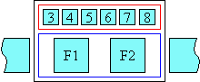
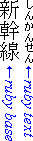
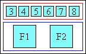
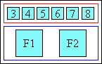
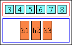
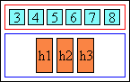
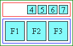

“Ruby” are short runs of text alongside the base text, typically used in East Asian documents to indicate pronunciation or to provide a short annotation. This module describes the rendering model and formatting controls related to displaying ruby annotations in CSS. CSS is a language for describing the rendering of structured documents (such as HTML and XML) on screen, on paper, in speech, etc.
The following features are at risk: …
This section is not normative.
This module extends the inline box model of CSS Level 2 [[!CSS21]] to support ruby.
None of the properties in this module apply to the ::first-line or
::first-letter pseudo-elements.
This specification follows the CSS property definition conventions from [[!CSS21]]. Value types not defined in this specification are defined in CSS Level 2 Revision 1 [[!CSS21]]. Other CSS modules may expand the definitions of these value types: for example [[CSS3VAL]], when combined with this module, expands the definition of the <length> value type as used in this specification.
In addition to the property-specific values listed in their definitions, all properties defined in this specification also accept the inherit keyword as their property value. For readability it has not been repeated explicitly.
There are a number of illustrations in this document for which the following legend is used:
 - wide-cell glyph (e.g. Han)
which is the n-th character in the text run, they may also appear as
half size boxes when used as annotations.
- wide-cell glyph (e.g. Han)
which is the n-th character in the text run, they may also appear as
half size boxes when used as annotations.
 - narrow-cell glyph (e.g. Roman)
which is the n-th glyph in the text run.
- narrow-cell glyph (e.g. Roman)
which is the n-th glyph in the text run.
Many typographical properties in East Asian typography depend on the fact that a character is typically rendered as either a wide or narrow character. All characters described by the Unicode Standard [[UNICODE]] can be categorized by a width property. This is covered by the Unicode Standard Annex [[UAX11]].
The orientation which the above symbols assume in the diagrams corresponds to the orientation that the glyphs they represent are intended to assume when rendered by the user agent. Spacing between these characters in the diagrams is usually symbolic, unless intentionally changed to make a point.
"Ruby" is the commonly used name for a run of text that appears in the immediate vicinity of another run of text, referred to as the "base", and serves as an annotation or a pronunciation guide associated with that run of text. Ruby, as used in Japanese, is described in JIS X-4051 [[JIS4051]] (in Japanese) and in Requirements for Japanese Text Layout [[JLREQ]] (in English and Japanese)]. The ruby structure and the XHTML markup to represent it is described in the Ruby Annotation [[RUBY]] specification. This section describes the CSS properties relevant to ruby. The following figures show two examples of Ruby.

Figure 2.2.1: Example of ruby used in Japanese (simple case)

Figure 2.2.2: Complex ruby with annotation text before and after the base characters
In the first example, a single annotation is used to annotate the base sequence. In Japanese typography, this simple case is sometimes called "taigo ruby" or group-ruby (per-word ruby).
In the second example, multiple annotations are attached to a base sequence, the hiragana characters on top refer to the pronunciation of each of the base Kanji characters (annotated in a mono-ruby fashion), while the words 'Keio' and 'University' on the bottom are annotations describing the English translation of respectively the first four and the last two Kanji characters of the base. To allow correct association between the hiragana characters and their corresponding Kanji base characters, the spacing between these Kanji characters may be adjusted (this happens around the fourth Kanji character in the figure 2.2.2 above).
Note: To avoid variable spacing between the Kanji characters in the example above the hiragana annotations can also be created as a simple annotation ruby.
The two examples correspond respectively to two types of ruby: simple ruby using simple ruby markup and complex ruby using complex ruby markup.
The CSS ruby model is based on the W3C Ruby Annotation Recommendation [[RUBY]]. The Recommendation specifies the ruby structure in a way to closely parallel the visual layout of the ruby element. In this model, a ruby consists of one or more base elements associated with one or more annotation elements.
The CSS model does not require that the document language include elements that correspond to each of these components. For document languages (such as XML applications) that do not have pre-defined ruby elements, authors must map document language elements to ruby elements; this is done with the 'display' property. The following 'display' values assign ruby semantics to an arbitrary element:
Issue: I18n WG proposes that there should be a display value rp also, to allow XML-based formats to associate rp behaviour with elements. See thread.
The rbspan attribute should also be used by XML applications to allow annotation spanning; but in addition, the 'ruby-span' property must be used by those applications to indicate to the user agent the number of ruby base elements to be spanned.
Issue: The spec needs to address anonymous box generation rules (and to make them compatible with HTML5 ruby markup).
In the following description, the elements specified by Ruby Annotation [[RUBY]] are used to describe the box model. As mentioned earlier, a user agent can obtain the same results by using the Ruby specific 'display' property values.
For a user agent that supports the ruby markup, the ruby structure consists of three or more boxes. The outermost container is the ruby element itself. In the simple case, it is a container for two non-overlapping boxes: the ruby text box (rt element) and the ruby base box (rb element). The positioning of these two boxes relative to each other is controlled by the 'ruby-position' property.
Figure 3.2.1: Ruby box model (simple case)
In the case of complex ruby, the ruby element is a container for two or three non-overlapping boxes: one ruby base collection (rbc element), and one or two ruby text collections (rtc element). The rbc element is itself a container for one or several ruby base box (rb element), while each rtc element is a container for one or several ruby text box (rt element). The position of the rtc element in relation to the related rbc element is controlled by the 'ruby-position' property. The two following figures show examples of these complex ruby.
Figure 3.2.2: Ruby box model (complex ruby with an empty rt element after)
In the example above, the ruby text after (below) the ruby bases contains two rt elements with the first one being empty, the empty rt element corresponds to the first part of the ruby base collection (the first part is identified by the first rb element within the rbc element).
Figure 3.2.3: Ruby box model (complex ruby with a spanning ruby text element)
In the example above, the ruby text before (above) the ruby bases spans the whole ruby base collection. The ruby text after (below) the ruby bases still contain two rt elements, one of which is empty. The spanning behavior of rt text elements is controlled by the rbspan attribute in a way similar to the colspan attribute used for table column.
Issue: The examples above contain the term 'group ruby', which is not used elsewhere in this specification. It appears to be used in a way that is different to the use of the term in JLREQ. I propose to replace it with just 'ruby'.
Note: The visual description of the ruby elements does not refer necessarily to the logical orders of the elements
The width of the ruby box is by default determined by its widest child element, whose width in turn is determined by its content. The width of all direct children of the ruby element is the width of the widest children. In this respect, the ruby box is much like a two or three row table element, with the following exceptions:
If the ruby text is not allowed to overhang, then the ruby behaves like a traditional box, i.e. only its contents are rendered within its boundaries and adjacent elements do not cross the box boundary:

Figure 3.2.4: Simple ruby whose text is not allowed to overhang adjacent text
However, if ruby text is allowed to overhang adjacent elements and it happens to be wider than its base, then the adjacent content is partially rendered within the area of the ruby base box, while the ruby text may be partially overlapping with the upper blank parts of the adjacent content:

Figure 3.2.5: Simple ruby whose text is allowed to overhang adjacent text
The ruby text related to a ruby base can never overhang another ruby base.
The alignment of the contents of the base or the ruby text is not affected by the overhanging behavior. The alignment is achieved the same way regardless of the overhang behavior setting and it is computed before the space available for overlap is determined. It is controlled by the 'ruby-align' property.
The exact circumstances in which the ruby text will overhang other elements, and to what degree it will do so, will be controlled by the 'ruby-overhang' property.
This entire logic applies the same way in vertical ideographic layout, only the dimension in which it works in such a layout is vertical, instead of horizontal.
Note: Because the purpose of the XHTML rp element [[RUBY]] is to allow pre-existing user agents to parenthesize ruby text content, an XHTML user agent should use a styling rule for these elements that avoids rendering them such as rp {display: none}.
The interaction of the ruby box and line stacking is controlled by the 'line-stacking-ruby' property described in the CSS3 Line Module. That property takes two values: 'include-ruby' and 'exclude-ruby. Depending on the property value, the ruby box is considered or excluded for line stacking. Even if the ruby box is considered for line stacking, some values of the 'line-stacking-strategy' property (also described in the CSS3 Line module) can still create occurrences where a the ruby box will eventually be ignored (e.g. case where the 'line-stacking-strategy' value is 'block-line-height').
In the following figure, each line box is shown with leading space distributed before and after the two text segments ('Previous line' and 'Ruby base'); the dotted lines show the line box for each line. The 'line-stacking-ruby' property is set to 'exclude-ruby'. The achieved effect is that the ruby box does not affect the line to line spacing. It is however the responsibility of the style author to avoid 'bleeding' effects between the ruby text and the surrounding text of images.

Figure 3.3.1: Excluded Ruby text
In the following figure, the line boxes have no extra leading space. The 'line-stacking-ruby' property is set to 'include-ruby' and the 'line-stacking-strategy' property is set to a value where inline boxes are considered for line stacking. In this case, the line box with the ruby text is affected and has its 'stack-height' increased by the amount necessary to fit the ruby text.
Figure 3.3.2: Ruby text increasing line height
This mechanism allows rendering of evenly spaced lines of text within a block-level element, whether a line contains ruby or not. The authors need only to set for the block-level element a line height value larger than the computed line-height of the largest ruby element within the block.
When a ruby falls at the end of a line where there is not sufficient room for the entire ruby to fit on the line, the complex ruby may be broken at locations where boxes of the ruby container align. Some examples are provided below to provide more clarity.

Figure 3.4.1: Complex ruby line breaking opportunity

Figure 3.4.1: "Bopomofo" ruby line breaking opportunity
Issue: Line breaks should only be allowed within ruby if the ruby base text can be broken at that point. E.g. if complex Ruby is used to annotate the two morphemes of "butterfly", the fact that we have added ruby annotations should not cause a line breaking opportunity to be present between "butter" and "fly"
All properties, in addition to the noted values, take 'initial' and 'inherit'. These values are not repeated in each of the property value enumeration.
| Name: | ruby-position |
|---|---|
| Value: | before | after | inter-character | inline |
| Initial: | before |
| Applies to: | the parent of elements with display: ruby-text. |
| Inherited: | yes |
| Percentages: | N/A |
| Media: | visual |
| Computed value: | specified value (except for initial and inherit) |
| Animatable: | no |
| Canonical order: | per grammar |
Issue: We replaced 'right' with 'inter-character', since that was its original intended purpose and such removes potential ambiguity with 'inline' or 'before'. Bopomofo ruby needs special handling by the implementation, if ruby is to always appear to the right. (Note that the user may also choose to position bopomofo ruby before the base, in which case they would use the normal 'before' setting.)
This property is used by the parent of elements with display: ruby-text to control the position of the ruby text with respect to its base. Such parents are typically either the ruby element itself (simple ruby) or the rtc element (complex ruby). This assures that all parts of a rtc element will be displayed in the same position. Possible values:
Issue-107: Roland Steiner has requested the addition of an auto value as default. See this thread and this one.

Figure 4.1.1: Top ruby in horizontal layout applied to Japanese text
If the base appears in a vertical-ideographic layout mode, the ruby appears on the right side of the base and is rendered in the same layout mode as the base (i.e. vertical-ideographic).

Figure 4.1.2: Top ruby in vertical ideographic layout applied to Japanese text

Figure 4.1.3: Bottom ruby in horizontal layout applied to Japanese text
If the base appears in a vertical ideographic mode, the bottom ruby appears on the left side of the base and is rendered in the same layout mode as the base (i.e. vertical).

Figure 4.1.4: Bottom ruby in vertical ideographic layout applied to Japanese text
Issue: We replaced 'right' with 'inter-character', since that was its original intended purpose and such removes potential ambiguity with 'inline' or 'before'. Bopomofo ruby needs special handling by the implementation, if ruby is to always appear to the right. (Note that the user may also choose to position bopomofo ruby before the base, in which case they would use the normal 'before' setting.) See this thread following a request from the i18n WG.
The ruby text appears on the right of the base. Unlike 'before' and 'after', this value is visual and is not relative to the text flow direction.
This value is provided for the special case of traditional Chinese as used especially in Taiwan: ruby (made of bopomofo glyphs) in that context appears vertically along the right side of the base glyph, whether the layout of the base characters is vertical or horizontal:

Figure 4.1.5: "Bopomofo" ruby in traditional Chinese (ruby text shown in blue for clarity) in horizontal layout
Note: The bopomofo transcription is written in the normal way as part of the ruby text. The user agent is responsible for ensuring the correct relative alignment and positioning of the glyphs, including those corresponding to the tone marks, when displaying. Tone marks are spacing characters that occur in memory at the end of the ruby text for each base character. They are usually displayed in a separate column to the right of the bopomofo characters, and the height of the tone mark depends on the number of characters in the syllable. One tone mark, however, is placed above the bopomofo, not to the right of it.
Note: To make bopomofo annotations appear before or after the base text, like annotations for most other East Asian writing systems, use the 'before' and 'after' values of ruby-position.
It is not defined how a user-agent should handle ruby text that is not bopomofo when the value of ruby-position is set to 'right'.
Ruby text follows the ruby base with no special styling. The value can be used to disable ruby text positioning.
If the author has used the XHTML rp element [[RUBY]] they should set the display value for that element to inline, so that the ruby text is distinguishable from the base text. If no rp element has been used, the author can use the content property with the :before and :after pseudo-elements to set off the ruby text.
Issue: Here is a request for this section to be added, from the i18n WG..
If two rtc elements are set with the same ruby-position value, (for example both 'before'), the relative position of the two elements is undefined. This setting should not be used.
| Name: | ruby-align |
|---|---|
| Value: | auto | start | left | center | end | right | distribute-letter | distribute-space | line-edge |
| Initial: | auto |
| Applies to: | all elements and generated content |
| Inherited: | yes |
| Percentages: | N/A |
| Media: | visual |
| Computed value: | specified value (except for initial and inherit) |
This property can be used on any element to control the text alignment of the ruby text and ruby base contents relative to each other. It applies to all the rubys in the element. For simple ruby, the alignment is applied to the ruby child element whose content is shorter: either the rb element or the rt element [[RUBY]]. For complex ruby, the alignment is also applied to the ruby child elements whose content is shorter: either the rb element and/or one or two rt elements for each related ruby text and ruby base element within the rtc and rbc element.
Possible values:
Issue: Tony Graham has suggested that distribute-letter and distribute-space be values of a ruby-group-distribution property, and line-edge be moved to a ruby-alignment-edge property, and that the rest be gathered under a ruby-alignment property. And that ruby-align become a shorthand.
 

Figure 4.2.1: Wide-cell text in 'auto' ruby alignment is 'distribute-space' justified
The recommended behavior for narrow-cell glyph ruby is to be aligned in the 'center' mode.
 

Figure 4.2.2: Narrow-width ruby text in 'auto' ruby alignment is centered
Issue: The i18n WG feels that start and left should not be synonymous, and proposed to drop left (there is no left/right in overhang)? See this thread.


Figure 4.2.3: Start ruby alignment


Figure 4.2.4: Center ruby alignment
Issue: The i18n WG feels that end and right should not be synonymous, and proposed to drop right (there is no left/right in overhang)? See this thread.

Figure 4.2.5: End ruby alignment


Figure 4.2.6: Distribute-letter ruby alignment
Figure 4.2.7: Distribute-space ruby alignment


Figure 4.2.8: Line edge ruby alignment
For a complex ruby with spanning elements, one additional consideration is required. If the spanning element spans multiple 'rows' (other rbc or rtc elements), and the ruby alignment requires space distribution among the 'spanned' elements, a ratio must be determined among the 'columns' of spanned elements. This ratio is computed by taking into consideration the widest element within each column.
In the context of this property, the 'left' and 'right' values are synonymous with the 'start' and 'end' values respectively. I.e. their meaning is relative according to the text layout flow. Most of the other CSS properties interpret 'left' and 'right' on an 'absolute' term. See Appendix A of the CSS3 Text Module for further details.
| Name: | ruby-overhang |
|---|---|
| Value: | auto | start | end | none |
| Initial: | none |
| Applies to: | the parent of elements with display: ruby-text |
| Inherited: | yes |
| Percentages: | N/A |
| Media: | visual |
| Computed value: | specified value (except for initial and inherit) |
This property determines whether, and on which side, ruby text is allowed to partially overhang any adjacent text in addition to its own base, when the ruby text is wider than the ruby base. Note that ruby text is never allowed to overhang glyphs belonging to another ruby base. Issue: This rule must be broken if we are to allow support for jukugo ruby. Also the user agent is free to assume a maximum amount by which ruby text may overhang adjacent text. The user agent may use the [[JIS4051]] recommendation of using one ruby text character length as the maximum overhang length. Detailed rules for how ruby text can overhang adjacent characters for Japanese are described by [[JLREQ]].
Possible values:
Figure 4.3.1: Ruby overhanging adjacent text

Figure 4.3.2: Ruby overhanging preceding text only

Figure 4.3.3: Ruby overhanging following text only
Figure 4.3.4: Ruby not allowed to overhang adjacent text
| Name: | ruby-span |
|---|---|
| Value: | attr(x) | none |
| Initial: | none |
| Applies to: | elements with display: ruby-text |
| Inherited: | no |
| Percentages: | N/A |
| Media: | visual |
| Computed value: | <number> |
This property controls the spanning behavior of annotation elements.
Note: A XHTML user agent may also use the rbspan attribute to get the same effect.
Possible values:
The following example shows an XML example using the 'display' property values associated with the 'ruby structure and the 'ruby-span' property
myruby { display: ruby; }
myrbc { display: ruby-base-container; }
myrb { display: ruby-base; }
myrtc.before { display: ruby-text-container; ruby-position: before}
myrtc.after { display: ruby-text-container; ruby-position: after}
myrt { display: ruby-text; ruby-span: attr(rbspan); }
...
<myruby>
<myrbc>
<myrb>10</myrb>
<myrb>31</myrb>
<myrb>2002</myrb>
</myrbc>
<myrtc class="before">
<myrt>Month</myrt>
<myrt>Day</myrt>
<myrt>Year</myrt>
</myrtc>
<myrtc class="after">
<myrt rbspan="3">Expiration Date</myrt>
</myrtc>
</myruby>
Issue: The i18n WG has requested the addition of a sample user agent default style sheet, as promised by Ruby Annotation section 3.4. See this thread.
There are two modules defined by this module:
CSS3 Simple Ruby model
CSS3 Complex Ruby model.
They both contain all the properties specified by this CSS chapter, i.e. 'ruby-align', 'ruby-overhang', 'ruby-position' and 'ruby-span'. They differ by the required 'display' property values. The Simple Ruby model requires the values: 'ruby', 'ruby-base' and 'ruby-text'. The Complex Ruby model requires in addition the values: 'ruby-base-container' and 'ruby-text-container'.
Conformance requirements are expressed with a combination of descriptive assertions and RFC 2119 terminology. The key words “MUST”, “MUST NOT”, “REQUIRED”, “SHALL”, “SHALL NOT”, “SHOULD”, “SHOULD NOT”, “RECOMMENDED”, “MAY”, and “OPTIONAL” in the normative parts of this document are to be interpreted as described in RFC 2119. However, for readability, these words do not appear in all uppercase letters in this specification.
All of the text of this specification is normative except sections explicitly marked as non-normative, examples, and notes. [[!RFC2119]]
Examples in this specification are introduced with the words “for example”
or are set apart from the normative text with class="example",
like this:
This is an example of an informative example.
Informative notes begin with the word “Note” and are set apart from the
normative text with class="note", like this:
Note, this is an informative note.
Conformance to CSS Ruby Module is defined for three conformance classes:
A style sheet is conformant to CSS Ruby Module if all of its statements that use syntax defined in this module are valid according to the generic CSS grammar and the individual grammars of each feature defined in this module.
A renderer is conformant to CSS Ruby Module if, in addition to interpreting the style sheet as defined by the appropriate specifications, it supports all the features defined by CSS Ruby Module by parsing them correctly and rendering the document accordingly. However, the inability of a UA to correctly render a document due to limitations of the device does not make the UA non-conformant. (For example, a UA is not required to render color on a monochrome monitor.)
An authoring tool is conformant to CSS Ruby Module if it writes style sheets that are syntactically correct according to the generic CSS grammar and the individual grammars of each feature in this module, and meet all other conformance requirements of style sheets as described in this module.
So that authors can exploit the forward-compatible parsing rules to assign fallback values, CSS renderers must treat as invalid (and ignore as appropriate) any at-rules, properties, property values, keywords, and other syntactic constructs for which they have no usable level of support. In particular, user agents must not selectively ignore unsupported component values and honor supported values in a single multi-value property declaration: if any value is considered invalid (as unsupported values must be), CSS requires that the entire declaration be ignored.
To avoid clashes with future CSS features, the CSS2.1 specification reserves a prefixed syntax for proprietary and experimental extensions to CSS.
Prior to a specification reaching the Candidate Recommendation stage in the W3C process, all implementations of a CSS feature are considered experimental. The CSS Working Group recommends that implementations use a vendor-prefixed syntax for such features, including those in W3C Working Drafts. This avoids incompatibilities with future changes in the draft.
Once a specification reaches the Candidate Recommendation stage, non-experimental implementations are possible, and implementors should release an unprefixed implementation of any CR-level feature they can demonstrate to be correctly implemented according to spec.
To establish and maintain the interoperability of CSS across implementations, the CSS Working Group requests that non-experimental CSS renderers submit an implementation report (and, if necessary, the testcases used for that implementation report) to the W3C before releasing an unprefixed implementation of any CSS features. Testcases submitted to W3C are subject to review and correction by the CSS Working Group.
Further information on submitting testcases and implementation reports can be found from on the CSS Working Group's website at http://www.w3.org/Style/CSS/Test/. Questions should be directed to the public-css-testsuite@w3.org mailing list.
This specification would not have been possible without the help from:
Stephen Deach, Martin Dürst, Hideki Hiura(樋浦 秀樹), Masayasu Ishikawa(石川 雅康), Chris Pratley, Takao Suzuki(鈴木 孝雄), Frank Yung-Fong Tang, Chris Thrasher, Masafumi Yabe家辺 勝文), Steve Zilles.